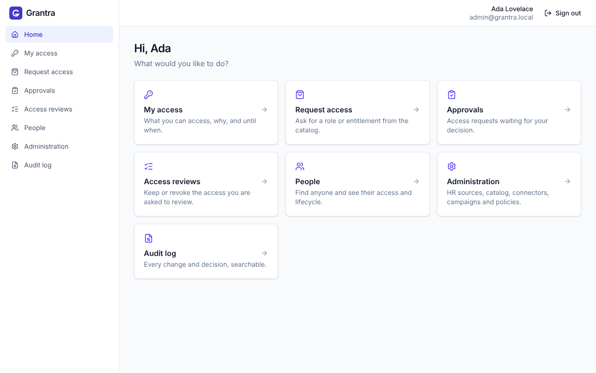
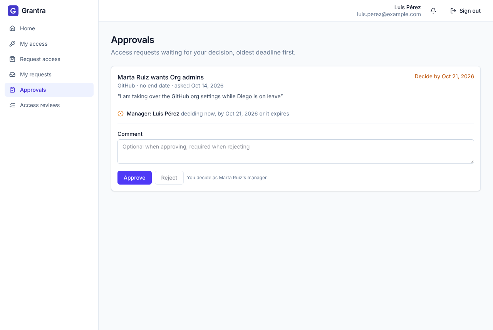
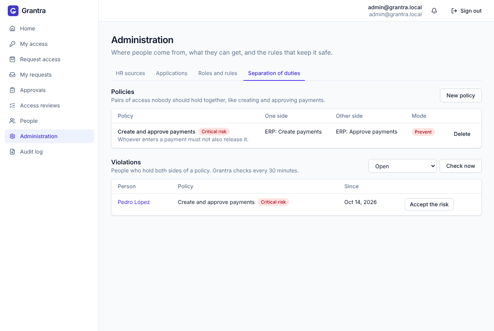

Joiner, mover, leaver
Reads people from your HR source and gives or removes access on their start and end dates. A dry run shows what changes, and a brake refuses a sync that would remove too many people at once.
Open source · Apache 2.0 · Self-hosted
Grantra is open-source identity governance, an open alternative to SailPoint and CyberArk. It gives and removes access as people join, move and leave, runs access requests and reviews, and stops toxic combinations of access before they happen.

Reads people from your HR source and gives or removes access on their start and end dates. A dry run shows what changes, and a brake refuses a sync that would remove too many people at once.
People ask for a role or entitlement from the catalog. Their manager, then the application owner, approves it, optionally until a date. Emails tell everyone when it is their turn.
Campaigns where managers or owners keep or revoke the access their people hold, with deadlines and reminders. Revoked access goes away.
Policies such as "nobody both creates and approves payments", detected every 30 minutes or prevented at request time, with time-boxed exceptions an admin signs off.
SCIM and LDAP / Active Directory. Grantra reads accounts, links them to people, flags orphans, and can provision changes back, off by default and with a dry run.
Every change and decision, with who made it and why, searchable from the console. Authorization inside Grantra runs on Cedar policies.
One web app for employees, managers, application owners, auditors and admins. Each person sees what they need to do, and nothing they shouldn't.
Keep the identity provider you already run, such as Entra ID, Okta or Keycloak. No identity provider yet? Grantra Login, a preconfigured Keycloak, ships with it.


All you need is Docker. The stack starts with a small sample company to play with.
git clone https://github.com/grantra-dev/grantra.git
cd grantra
make upOpen http://localhost:8080 and sign in as admin / admin, or as a sample employee such as marta with the password demo. The demo guide walks through a new hire, an approval, an access review and a leaver.